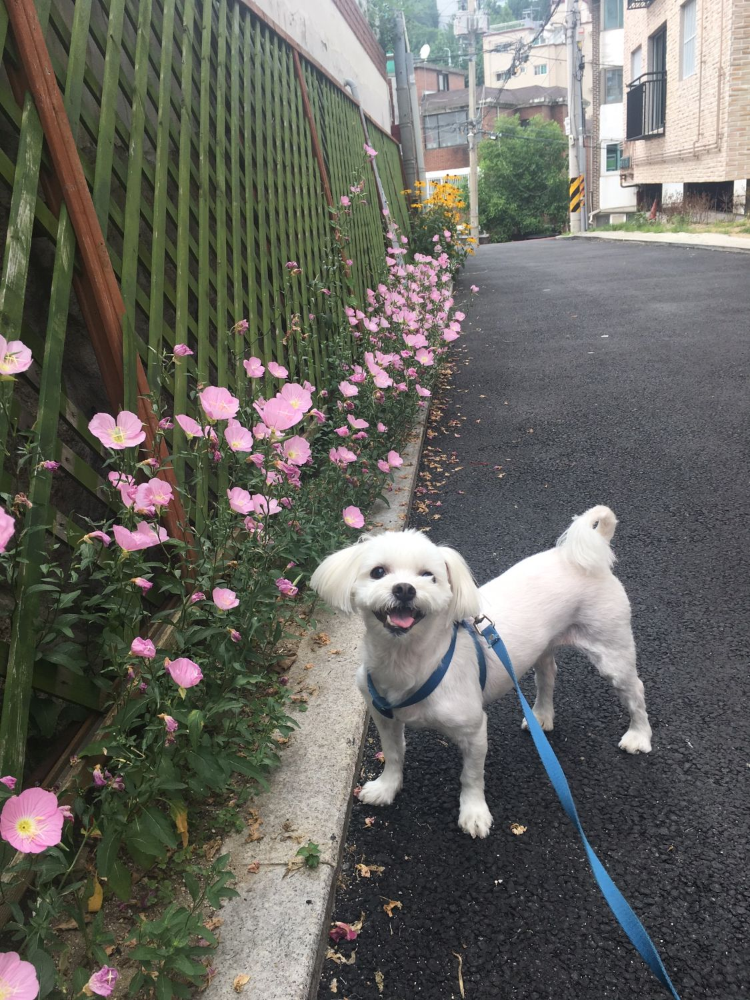
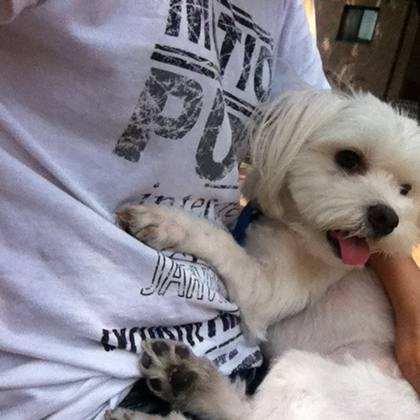
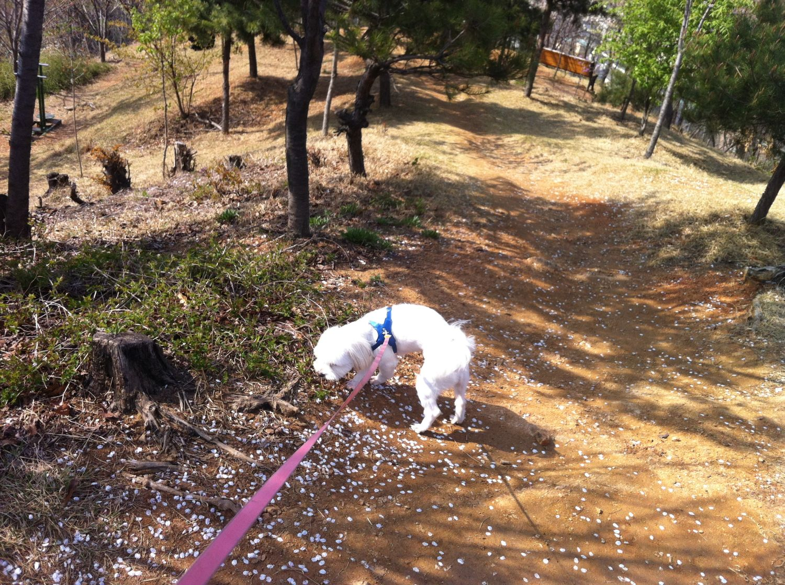
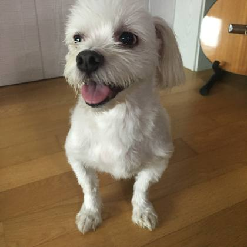

Pet-specialized Memory OS · 데모버전
흩어진 기억을 올리면,


흩어진 기억을 올리면,
삶의 이야기로 엮입니다.
사진 저장 앱이 아닙니다. AI가 반려동물의 삶을 시간·관계·감정 단위로 읽고, 한 권의 이야기로 구조화하는 Pet LifeOS입니다.
한 줄 정의 — “사진 저장 앱이 아니라, 반려동물의 삶을 구조화하는 전용 LifeOS를 만든다.”
GPT wrapper
포토북 생성기
⭕ Pet-specialized Memory OS




실제 반려견 ‘하루’의 사진으로 구성한 데모입니다.